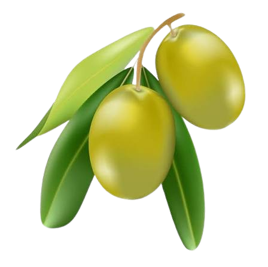
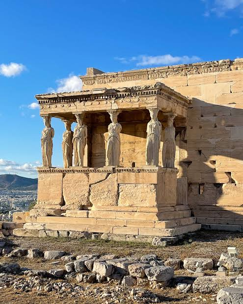
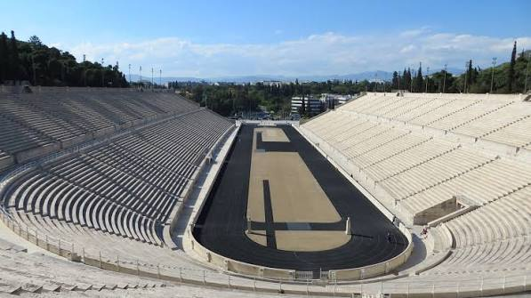
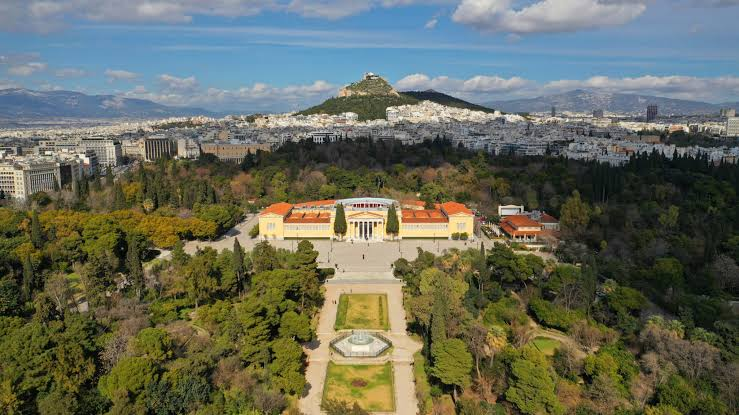
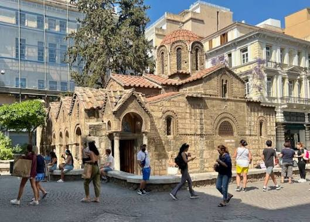

✦ WISATA LUAR • GREECE ✦
ALL OVER ATHENS, GREECE
Land of Gods and myths
About Greece
Tentang Yunani
Yunani adalah negara yang terletak di Eropa bagian tenggara,
tepatnya di bagian selatan Semenanjung Balkan. Yunani memiliki
wilayah yang terdiri dari daratan utama, pegunungan, serta ribuan
pulau dan pulau kecil yang berada di Laut Aegea dan Laut Ionia.
Sekitar 80% wilayah Yunani berupa pegunungan, sehingga keadaan
geografis negara ini sangat dipengaruhi oleh pegunungan dan laut.
Yunani juga memiliki banyak pantai dan pulau yang menjadi salah
satu daya tarik wisatanya. Ibu kota sekaligus kota terbesar Yunani
adalah Athens. Bahasa resmi yang digunakan adalah bahasa Yunani,
sedangkan mata uangnya adalah euro.
Sejarah & Budaya
Yunani memiliki sejarah yang sangat panjang dan menjadi salah satu
wilayah penting dalam perkembangan peradaban Barat. Pada masa
Yunani Kuno, berbagai pemikiran dalam bidang filsafat, seni,
ilmu pengetahuan, teater, dan politik berkembang dengan pesat.
Yunani juga dikenal sebagai salah satu tempat berkembangnya
demokrasi, terutama di Athens. Selain itu, Olimpiade memiliki
hubungan yang erat dengan sejarah Yunani Kuno. Warisan budaya
Yunani dapat dilihat melalui berbagai kuil, patung, bangunan,
karya seni, serta cerita mitologi yang masih dikenal sampai
sekarang. Budaya Yunani juga berkembang melalui pengaruh dari
masa Yunani Kuno, Kekaisaran Bizantium, hingga Yunani modern.
Athens, Ibu Kota Yunani
Athens merupakan ibu kota dan kota terbesar di Yunani. Kota ini
memiliki sejarah lebih dari 6.000 tahun dan menjadi salah satu
pusat penting dalam perkembangan kebudayaan serta demokrasi.
Athens terkenal dengan peninggalan sejarahnya yang masih dapat
ditemukan di berbagai bagian kota, seperti Acropolis, Parthenon,
Kuil Hephaestus, dan Stadion Panathenaic. Namun, Athens tidak
hanya terdiri dari bangunan kuno. Kota ini juga merupakan kota
modern dengan kawasan perkotaan yang ramai, tempat tinggal,
toko, restoran, museum, dan berbagai fasilitas lainnya. Saat ini,
Yunani memiliki sekitar 11 juta penduduk dan lebih dari 60%
penduduknya tinggal di wilayah perkotaan. Perpaduan antara
peninggalan sejarah dan kehidupan modern membuat Athens memiliki
karakter yang unik sebagai salah satu kota terkenal di Eropa.
PHOTO ALBUM
Gambaran Yunani

"The only true wisdom is in knowing you know nothing." -Socrates

"Happiness depends upon ourselves." – Aristotle

"Everything flows, nothing stands still." – Heraclitus

"Be kind, for everyone you meet is fighting a harder battle." – Philo
EXPLORE ATHENS
Peta Athens
Klik titik pada peta untuk melihat informasi tentang tempat tersebut!
Tempat Wisata

Acropolis
Acropolis adalah salah satu tempat bersejarah paling terkenal
di Athens. Tempat ini berada di atas bukit dan merupakan rumah
bagi Parthenon. Acropolis menjadi salah satu simbol penting
dari sejarah dan budaya Yunani Kuno.

Academy
Academy of Athens adalah bangunan bergaya neoklasik yang
terinspirasi dari arsitektur Yunani Kuno. Bangunan ini
berhubungan dengan pendidikan, ilmu pengetahuan, dan budaya.

Kuil Hephaestus
Kuil Hephaestus merupakan salah satu kuil Yunani Kuno yang
masih sangat terawat. Kuil ini didedikasikan kepada Hephaestus,
dewa yang berhubungan dengan kerajinan dan pengerjaan logam.

Stadion Panathenaic
Stadion Panathenaic adalah stadion bersejarah yang seluruhnya
terbuat dari marmer. Stadion ini juga memiliki hubungan dengan
sejarah Olimpiade modern.

National Garden
National Garden adalah taman yang berada di pusat Athens.
Tempat ini memiliki suasana yang lebih tenang dan cocok untuk
berjalan-jalan serta menikmati alam di tengah kota.

Kapnikarea
Kapnikarea adalah gereja Bizantium yang berada di pusat Athens.
Gereja ini memiliki arsitektur yang unik dan menjadi salah satu
bangunan bersejarah di kota tersebut.
Thank You for visiting!
Σας ευχαριστώ!
Semoga website ini dapat menambah wawasan pembaca
dan membuat pembaca lebih tertarik untuk mengenal
Athens, Greece lebih dalam.
Dibuat Oleh Levi 92 / 24